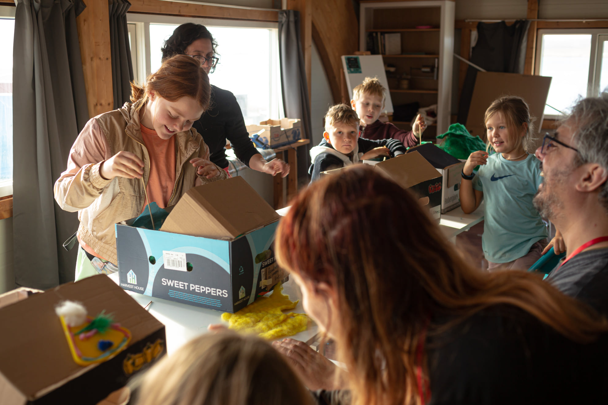
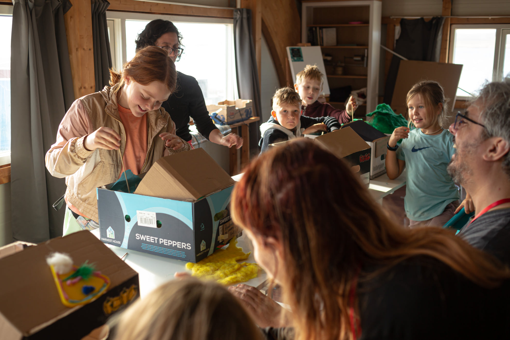

Educación Formal
Graduada en Psicología por la Universidad Católica Ntra. Sra. de la Asunción (1994 – 2000).
Directora de Psicodrama por GRUPA, Grupo de Psicodrama de Asunción (1998 -2000).
Experta en Gestión de Servicios Sociales – Universidad Complutense de Madrid (2002 –2003).
Post Bachelor Programme in Relation and Networks por Universidad de Tromso, Noruega y Universidad de Lanús, Argentina (2005 – 2006).
Libros de Cuentos Editados

Experiencia Profesional
Trabajo Actual
Profesora de arte en la Escuela Elemental Seydisfjardaskóli, Seydisfjordur, Islandia, desde agosto de 2020 y actualmente.
 https://seydisfjardarskoli.sfk.is/is/frettir/category/1/dear-you-verkefnid-hja-2-og-3-bekk
https://seydisfjardarskoli.sfk.is/is/frettir/category/1/dear-you-verkefnid-hja-2-og-3-bekk
 https://seydisfjardarskoli.sfk.is/is/frettir/category/1/
https://seydisfjardarskoli.sfk.is/is/myndir/skuggaleikhus
https://seydisfjardarskoli.sfk.is/is/frettir/category/1/
https://seydisfjardarskoli.sfk.is/is/myndir/skuggaleikhus
Desde mayo de 2019 reside en Islandia donde ha realizado shows de Teatro Lambe Lambe y diferentes talleres con jóvenes y niños. Ha participado en festivales y ha desarrollado 2 proyectos de arte y fortalecimiento comunitario con el apoyo de fondos Samtök Sunnlenskra Sveitafélaga -SAS- (2020) y Uppbyggingarsjóður Austurlands (2022).
 https://eystrahorn.is/stories-with-bodies
http://stories.fas.is/
https://eystrahorn.is/stories-with-bodies
http://stories.fas.is/
Misplaced Gaze
Muestra de fotografía de Juanjo Ivaldi y poesía de Tessa Rivarola. Inaugurada como "Mirada extraviada" en abril de 2021 en el Museo Castillo de Mata con curaduría de la Fundación Francis Naranjo.
https://drive.google.com/file/d/10z5rD-0jaQPZHDMMTE-kwG5j_N6iQjSp/view?usp=sharing
 https://www.austurfrett.is/lifid/ur-fjoelmenni-paragvai-i-famenni-seydhisfjardhar
https://www.austurfrett.is/lifid/ur-fjoelmenni-paragvai-i-famenni-seydhisfjardhar
Durante todo el mes de marzo de 2022 en Egilsstaðir - Neskaupstaður - Seyðisfjörður: Exhibición itinerante por los fiordos del este de Islandia, que ha incluido en cada lugar un workshop "Percepciones de los jóvenes sobre el cambio climático" en el que han participado un total de 68 jóvenes.

Este proyecto ha contado con el apoyo de Uppbyggingarsjóður Austurlands.

Stories with Bodies
Ha diseñado y conducido el taller de teatro físico para estudiantes secundarios llamado “Stories with bodies”, ciudad de Höfn. En el marco del proyecto creatividad y fortalecimiento comunitario llamado: Sögur og samfélags tengsl / Historias y lazos comunitarios con el apoyo de los fondos Samtök Sunnlenskra Sveitafélaga (SAS).
Directora de la Performance: Stories with bodies.

Co-organizadora en actividad comunitaria "Biblioteca humana" en la biblioteca de Höfn, Hornafjöður (2019).
Hvammstangi International Puppetry Festival
Participación en Hvammstangi International Puppetry Festival, Islandia, que tuvo lugar en octubre 2020. Presentando show de teatro Lambe lambe.
Workshop "Little stories with miniature puppets".

Guiando workshop en Herðubreið, el centro comunitario de la ciudad de Seyðisfjörður, durante el festival de otoño 2020.
 https://www.facebook.com/thehipfest/
https://www.facebook.com/thehipfest/
Dear You Art Project
Desde octubre de 2021 colabora con la artista Arlene Tucker (Finlandia), creadora de Dear You Art Project, conectando a niños de Islandia con niños de otros países, como Ucrania y USA, con un énfasis en los títeres como puentes interculturales.
 https://www.dearyouartproject.com/
https://www.dearyouartproject.com/
 https://seydisfjardarskoli.sfk.is/is/frettir/category/1/dear-you-verkefnid-hja-2-og-3-bekk
https://seydisfjardarskoli.sfk.is/is/frettir/category/1/dear-you-verkefnid-hja-2-og-3-bekk
Kunu´u Tïteres
Desde el año 2009 y actualmente forma parte de la compañía Kunu´u Tïteres, la compañía Kunu´u Títeres está conformada por Carola Mazzotti y Tessa Rivarola, viene realizando obras de títeres, talleres de construcción de muñecos y producciones en Paraguay de espectáculos de titiriteras y titiriteros de otros países.
 Blog Kunu'u Titeres
Facebook Kunu'u Titeres
Instagram Kunu'u Titeres
Blog Kunu'u Titeres
Facebook Kunu'u Titeres
Instagram Kunu'u Titeres
Kunu'u Titeres en Islandia.
Participación de 2 obras de teatro Lambe Lambe en 2ndo Festival Internacional de títeres en Hvammstangi, HIP Festival. Octubre, 2021
 Teatro de lo pequeño, en el Nacional.
Teatro de lo pequeño, en el Nacional.

Teatro Lambe Lambe de Kunu'u Títeres
Participando del UNGI Fest en la semana de Arte para las infancias organizado por Assitej Ísland en Reykjavik, Islandia. Del 8 al 9 de abril 2022
 https://www.facebook.com/assitej.iceland/
https://www.facebook.com/assitej.iceland/


Desarrollo del workshop "Small worlds for miniature puppets" durante HIP Festival (0ctubre, 2021)
 
https://kunuutiteres.com/2022/03/22/kunuu-titeres-de-paraguay-hasta-islandia-con-teatro-lambe-lambe/

https://kunuutiteres.com/2022/03/22/kunuu-titeres-de-paraguay-hasta-islandia-con-teatro-lambe-lambe/
Arte & Procesos Comunitarios
Desde el año 2004 diseña y conduce proyectos sociales donde combina arte, creatividad y fortalecimiento de lazos comunitarios, junto a organizaciones no gubernamentales y movimientos sociales.

Entre 2005 y 2012 formó parte de la compañía de teatro espontáneo Kusuví, dirigida por Lirio Obando, con quienes realizó intervenciones en calle, plazas y escuelas públicas abordando problemáticas sociales con este dispositivo participativo.

A partir del año 2009 viene desarrollando intervenciones de teatro en calle y sitios de tortura en época de la dictadura “Arte por la memoria” junto a Servicio Paz y Justicia Paraguay (SERPAJ PY).

Entre 2008 y 2014 formó parte de la compañía Hara Teatro, dirigida por Wal Mayans, con quienes realizó 7 años de laboratorio de teatro antropológico y participó en calidad de actriz en giras con obras de teatro por Curitiba, Fortaleza (Brasil), Córdoba (Argentina), Fara Sabina (Italia) y Shangai (China).

Algunos Trabajos entre 2015 y 2018:
Especialista de Arte en Proyecto prevención de la violencia e inserción social. Ejecutado en el barrio San Carlos de la ciudad de Luque con financiación del BID y ejecutada por la Fundación CIRD. De marzo a diciembre 2018.

Unipersonal dirigido por Raquel Martínez «Remedios Varo, un alma surrealista » en ciclo de teatro hispanoamericano del centro cultural español Juan de Salazar. Diciembre 2018.
 https://www.eluniversal.com.mx/cultura/obra-de-teatro-recupera-la-vida-olvidada-de-la-artista-exiliada-remedios-varo
https://www.eluniversal.com.mx/cultura/obra-de-teatro-recupera-la-vida-olvidada-de-la-artista-exiliada-remedios-varo
Niña Pájaro. Un tributo a Alejandra Pizarnik », obra que combina teatro y manipulación de objetos. Coproducción Kunu´u Títeres y Teatro Miniatura Paraguay. Se estrenó en setiembre y giró por Posadas y Resistencia – Argentina en el año 2016.
En el año 2017 se presentó en el Centro Cultural Paraguayo Americano (CCPA).
 Niña-pájaro-vuela-posadas
Niña-pajaro-en-el-ccpa
YouTube Niña Pájaro
Niña Pájaro en el Teatro de las Americas
Niña-pájaro-vuela-posadas
Niña-pajaro-en-el-ccpa
YouTube Niña Pájaro
Niña Pájaro en el Teatro de las AmericasGira nacional (Asunción, Encarnación, Pilar, Ciudad del Este) e internacional (Buenos Aires / Curitiba) con la obra « Muñequita Rota », performance e instalación sobre mandatos sociales y sus efectos en los cuerpos. La propuesta multimedia era seguida de un debate en torno a mujeres/cuerpo/deseo/poder. Junto a las artistas Ana Brisa Caballero y Marisol Salinas. De junio a noviembre 2015.
 https://www.ip.gov.py/ip/munequita-rota-recorrera-escenarios-nacionales-e-internacionales/
https://www.ip.gov.py/ip/munequita-rota-recorrera-escenarios-nacionales-e-internacionales/
En el año 2015 estrenó en Berlín su primer Solo “Bellmerides” con la dirección de Marisol Salinas (El Salvador) y la asistencia artística de Birgitt Asshoff (Berlin).
En el mismo año se realizó 1 presentación del solo Bellmerides en Madrid y 10 presentaciones junto a otras 2 obras breves en El Granel, lugar de encuentro, Asunción. En el marco de la producción “A capela”, idea original de Jorge Báez.
 http://ea.com.py/una-transgresora-apuesta-sobre-la-identidad-de-la-mujer/
http://ea.com.py/una-transgresora-apuesta-sobre-la-identidad-de-la-mujer/
Link a Facebook Niña Pajaro